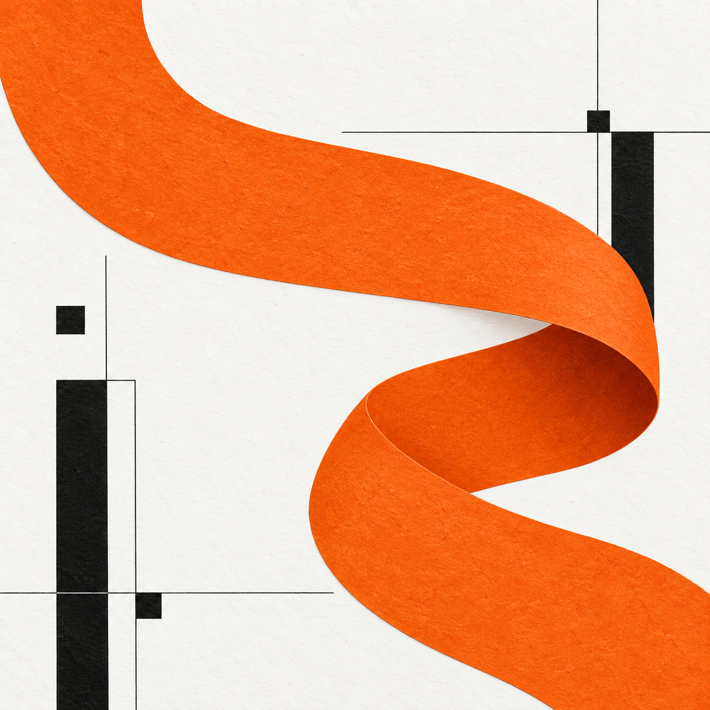

Лендінг
Одна сторінка для послуги чи продукту: пропозиція, переваги та зрозумілий спосіб зв’язатися.
Незалежний вебдизайнер
Допомагаю невеликим бізнесам розповісти про себе. Створюю сайти, у яких легко знайти потрібне й зробити наступний крок.

Студія ідейТри приклади того, як дизайн підлаштовується під справу та її аудиторію.
Демонстраційні концепції, створені для цього портфоліо.
Від першого ескізу до сторінки, якою зручно користуватися.
Одна сторінка для послуги чи продукту: пропозиція, переваги та зрозумілий спосіб зв’язатися.
Компактний сайт про вашу справу: послуги, приклади робіт і корисна інформація для клієнтів.
Впорядкую тексти та блоки, освіжу оформлення й адаптую сторінку для телефона.
Визначаємо, для кого сайт, що він має пояснювати та які матеріали вже є.
Погоджуємо структуру та оформлення. Вносимо зміни до обраного варіанта.
Перевіряємо сайт на різних екранах і передаємо готову сторінку.
Кілька речень про вашу справу допоможуть визначити перший крок. Складіть короткий бриф і збережіть його для обговорення.
Бриф завантажується на ваш пристрій. Дані з цієї форми нікуди не надсилаються.